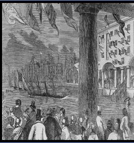
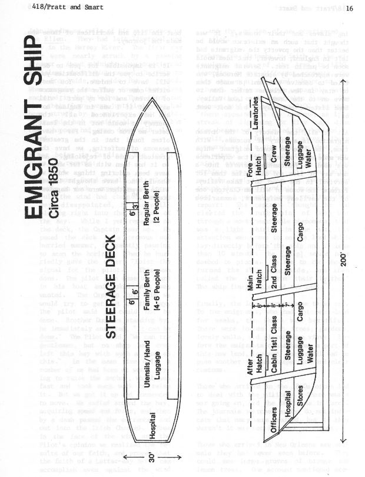

Links
This site lists Mormon passengers and voyages – Mormon Migration https://mormonmigration.lib.byu.edu/mii/voyage/214?mii=on&query=Poppett&voyage=on&scandinavia=on&dateFrom=&sweden=on&europe=on&netherlands=on&account=on&passenger=on&dateTo=
The Lord Sandon ship manifest that lists Robert and his fellow Mormon passengers – New Orleans Passenger Lists – 7 Feb to 29 May 1849 https://familysearch.org/ark:/61903/3:1:33SQ-G5JH-56P?cc=1916009
A journal entry from the Church Agent at New Orleans in 1849, Elder Lucias Scovil – https://dcms.lds.org/delivery/DeliveryManagerServlet?dps_pid=IE407735&page=328
Pictures
Figure 1 - On the ship in dock

Figure 2- Liverpool dock, 1846

Figure 3- Pratt and Smart, "Life on Board a Mormon Emigrant Ship," 16.